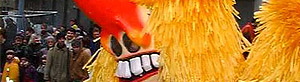

Käsewähe
5 von 6ein tl maizena, 2 eier, 2dl milch, 2dl rahm und wenig salz in einer schüssel kurz durchschlagen.
den ausgewalten kuchenteig mit ca 150gr geraffelndegruyère oder emmentaler belegen. eiermilch darüber
geben und sofort in den vorgeheizten backofen. 25-30min bei ca 220 grad.
